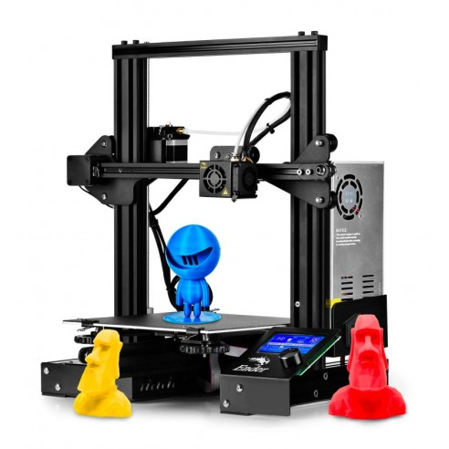
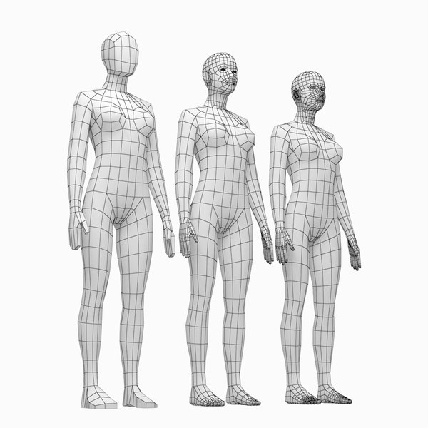
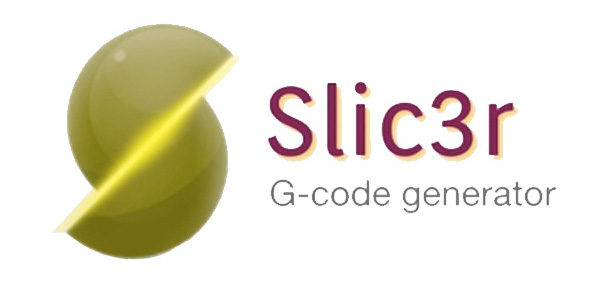
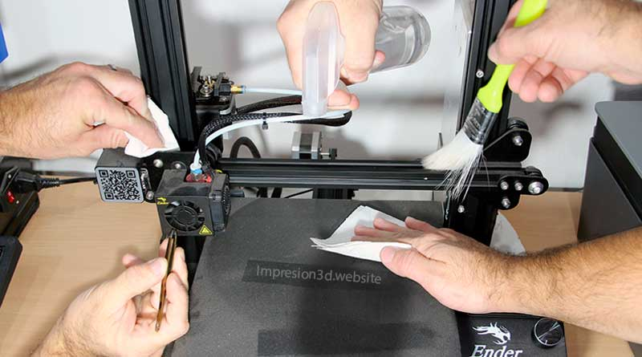

Introducción
La impresión 3D es una tecnología que permite crear objetos tridimensionales a partir de un modelo digital. Es una técnica que se utiliza cada vez más en diversos campos, como la medicina, la ingeniería, el diseño y la arquitectura. En este tutorial, aprenderás los conceptos básicos para empezar a utilizar una impresora 3D.
Modelado 3D
Antes de imprimir un objeto en 3D, es necesario crear un modelo digital del mismo. Para ello, existen diversas herramientas de modelado 3D, como Blender, SketchUp o Tinkercad; por otro lado tambien puedes descargar los modelos ya finalizados en diferentes paginas, como pueden ser, thingiverse, cults 3D, myminifactory etc. En este apartado, aprenderás los conceptos básicos para crear modelos 3D utilizando estas herramientas.
Slic3r
Una vez que se tiene el modelo 3D, es necesario prepararlo para su impresión. Para ello, se utiliza un software de corte, como Slic3r o ultimaker cura. En este apartado, aprenderás cómo utilizar este software para optimizar la impresión de tu modelo 3D.
Impresión

Una vez que se ha preparado el modelo 3D, se procede a la impresión del objeto. En este apartado, aprenderás cómo preparar la impresora 3D y cómo realizar la impresión de tu modelo 3D.
Mantenimiento
Por último, es importante realizar un mantenimiento periodico a la impresora 3D en la que se este trabajando, como limpiar sus partes, ajustar las ruedas ecentricas, tenzar correas, limpiar y lubricar el tornillo sin fin del eje Z etc. es importante recalcar, que se debe tener conocimientos previos antes de realizar este proceso a tu impresora 3D.